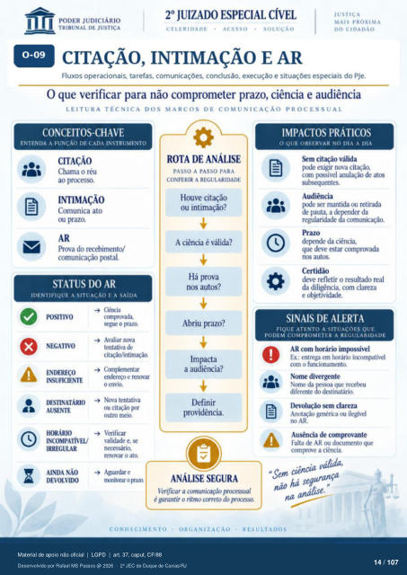

Transcrição automática em português, ainda não revisada. Confira grafia, prazos e termos jurídicos na imagem e no PDF antes de utilizar.
1
CITAÇÃO, INTIMAÇÃO E AR
Fluxos operacionais, tarefas, comunicações. conclusão, execução e situações especiais do PJe. O que verificar para não comprometer prazo, ciência e audiência
LEITURA TÉCNICA DOS MARCOS DE COMUNICAÇÃO PROCESSUAL
CONCEITOScHAVE
ENTENDA A FUNCÁO DE CADA INSTRUMENTO
CITAÇÃO
Chama o réu ao prcx•esso.
INTIMAÇÃO
Comunica ato ou prazo.
AR Prova do recebimento/
cununicação postal.
STATUS DO AR
IDENTIFIQUE A SITUAÇÃO F. A SAÍDA
POSITIVO
NEGATIVO
DBTINATÁRIO
AUSENTE
HORÁRIO
INCOMPATÍVEL/
IRREGULAR
AINDA NÃO
DEVOLVIDO
Ciérx•ia comprovada.
segue o prazo. Avaliar nova
tentativa de citaçáo/intimaçào.
Complementar endereço e remar
o envio. Nova tentativa
ou cit;wio pr outro meio.
Verificar validade e, se
renovar o ato Aguardar e
nmitcrar
ROTA DE ANÁLISE
PASSO A PASSO PARA
CONFERIR A REGULARIDADE
Houve citação ou intimação?
A ciência é válida? Há prova
autos? Abriu prazo?
Impacta a audiência?
Definir providência.
ANÁLISE SEGURA
Verificar a comunicação processual é garantir o ritmo correto do prcxvsso.
IMPACTOS PRÁTICOS
O QUE OBSERVAR NO DIA A DIA
citação válida exigir nova citação,
com rmsível anulação de atos subsequentes.
Audiência rxxle ser mantida ou retirada
de pauta, a nder da regularidade comunicação
deFnde da ciência que deve estar comprovada
autos. deve refletir o resultado real
da diligência, com clareza e cuetividade.
SINAIS DE ALERTA
FIQUE ATENTO A SITUAÇÕES QUE
PODEM COMPROMETER A REGULARIDADE
AR com horário irnlx:yssível Ex.: entrega em horário incompatível
o funcionamento. Nome divergente
Nome da diferente
Devolução sem clareza Anotação genérica ou ilegível
no AR. Ausência de comprovante
Falta de AR ou dcxumento que comvrove a ciência.
a Sent cincourança seg
CONHECIMENTO
ORGANIZA CAO
RESULTADOS
Ver também o infográfico original (página 14)
